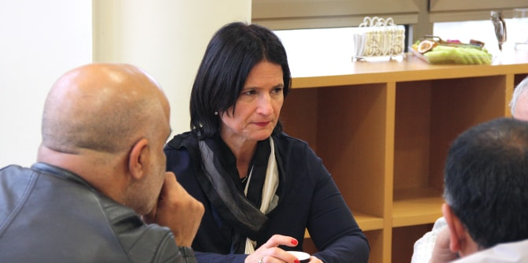
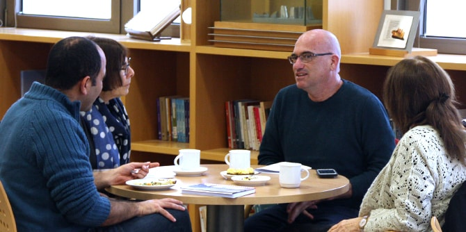

בפתח המפגש התיישבו המשתתפים בחברותות לקריאת הטקסט "ידידות" מאת ש"י עגנון, המגולל את סיפור נדודיו של אדם המחפש לשוב לביתו אך נתקל בקושי רב מכיוון ששכח היכן הוא גר. הקריאה המשותפת ביצירה הספרותית היוותה בסיס לדיאלוג על אדם ומקום, תוך חיבורו של קשר זה לנושא הגג של מפגשי הפורום השנה – צל ומדבר.
אחר כך התכנסה הקבוצה למפגש עם ד"ר מירב רוט, פסיכולוגית קלינית ופסיכואנליטיקאית, העוסקת בעיון פסיכואנליטי בספרות ותרבות. דרך התבוננות חוזרת בסיפורו של עגנון הרצתה רוט על היבטיו של הצל בנפש האדם בציר שנע בין תפיסתו של פרויד, שלפיה "צלו של האובייקט נופל על האני", לבין הפיתוח שהציע יונג בראיית הצל כמכלול חלקי הנפש של האני עצמו שאותם אינו יכול לשאת. הלימוד המונחה של הטקסט תוך התייחסות להמשגות של צללי הנפש, הרחיבו את הדעת והיוו הזדמנות לשיח משתף על צל, אדם וחברה בבסיס החוויה האנושית והיצירה התרבותית.

לאחר ההרצאה שבו המשתתפים למעגלי שיח ובהם חשבו יחד על צל ועל אתגרי העשייה החברתית-תרבותית שהם מובילים במרחב הנגב – משיכת אוכלוסיות חדשות ואתגר הישארותן במבט על הנגב המערבי אל מול הנגב המזרחי, הגדלת מספר המועמדים לאקדמיה בקרב החברה הערבית-בדואית, וקידום אמנות ואירועי תרבות של הקהילה הגאה בעיר באר שבע.
סדרת המפגשים, בהובלתן של ד"ר רות קלדרון וד"ר עדי ניר שגיא, היא פורום של מנהיגים ודמויות מפתח מאזור הנגב המתכנס ללימוד ולהשראה על תרבות ויצירה מקומית. למפגש הגיעו דמויות מפתח מובילות מהנגב הפועלות ברשויות המקומיות, באקדמיה, במוסדות ציבור ובגופי תרבות בתחומי היצירה והאמנות המקומית. המפגש המשותף תורם לחשיבה ולעשייה תרבותית ייחודית ופורצת דרך בנגב.

{kind=link}
{kind=link}